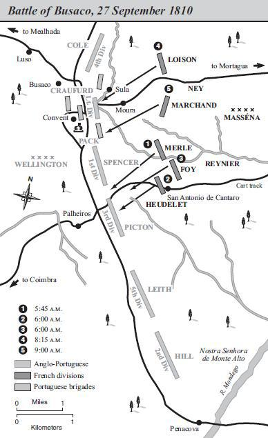
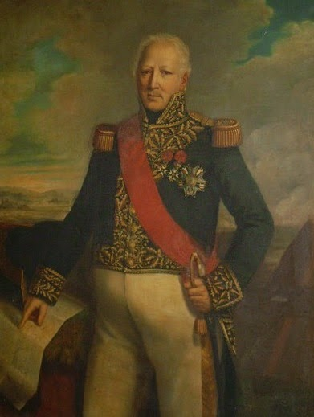
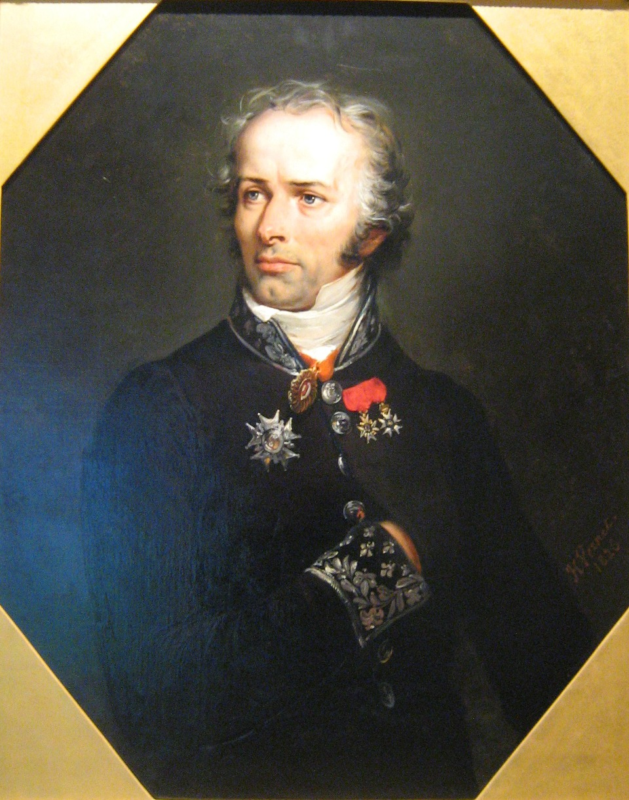
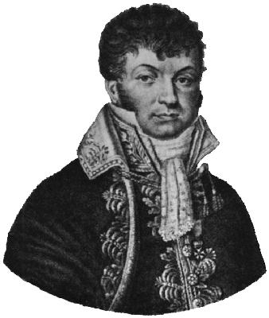
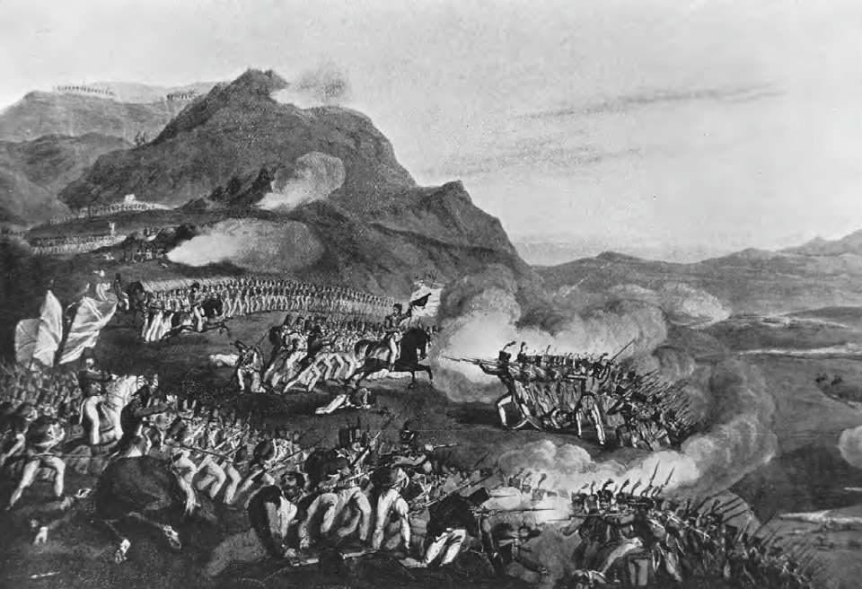

부사쿠(Bussaco) 전투 (2) - 가늘고 긴 선
게시: 2018-11-22T06:30:00+09:00
마세나의 명령대로 이른 아침 부사쿠 능선에 늘어선 영국군 방어선의 측면을 향해 기어오른 레이니에의 제 2군단은 크게 2개 사단으로 구성되어 있었습니다. 앞서 말씀드린대로, 이들은 몬데고 계곡에서 피어오르는 자욱한 아침 안개에 가려져 영국군의 관측을 피할 수 있었습니다. 하지만 이 안개로 인해 프랑스군도 능선 위의 영국군의 존재를 볼 수 없었을 뿐만 아니라, 자신들의 대오를 맞추는 것도 어려웠습니다. 이들은 사단 단위의 질서 정연한 대오가 아니라 기껏해야 대대 단위를 간신히 유지한 엉클어진 모습으로 행군해야 했습니다.
원래 계획대로라면 안개를 뚫고 고지에 오른 프랑스군 눈 앞에 펼쳐진 능선은 텅 비어 있어야 했습니다. 영국-포르투갈 연합군의 방어진의 측면을 우회하는 것이 원래 계획이었으니까요. 그러나 천만 뜻밖에도 프랑스군을 반갑게 맞이한 것은 연합군의 포병대와 머스켓 일제 사격이었습니다. 대체 어떻게 된 것이었을까요 ?
마세나의 상식으로는 웰링턴도 프랑스군 본진의 위치가 어디인지 보았으니, 능선을 방어한다고 해도 적당한 길이, 즉 4~5km 정도에 걸쳐 방어선을 펼칠 것으로 보았습니다. 마세나도 참전했던 바그람 전투 때, 막도날이 프랑스군 제5 군단을 기둥 모양으로 편성해서 오스트리아군의 전선을 들이받을 때도 그 기둥 앞면의 폭과 길이는 550m x 800m 정도였습니다. 따라서 프랑스군 3개 군단 약 6만5천보다 약간 작은 5만 정도로 알려진 영국군의 경우도 적절한 규모의 예비대를 대기시킬 것을 생각하면 최대 5km 이상 펼치는 것은 무리라고 보았습니다.
그러나 웰링턴은 정말 가늘고 긴 방어선 매니아였습니다. 예비대 ? 그런 건 겁쟁이나 준비해두는 것이었지요. 그는 예비대도 없이 거의 8~9km에 걸쳐 5만의 영국-포르투갈 사단들을 최대한 펼쳐서 가늘고 길게 늘어놓았던 것입니다. 그러다보니 마세나가 '이 정도면 연합군 방어선의 왼쪽 측면 너머겠지'라고 생각한 부분이, 놀랍게도 연합군 방어선의 거의 중앙부에 해당하는 곳이었습니다 !

(영국군 방어선의 오른쪽으로 충분히 우회했다고 생각했는데 영국군 우익은 커녕 거의 중앙부로 돌격해들어간 프랑스군의 공격 방향을 보십시요.)
웰링턴의 이 가늘고 긴 방어선은 마세나를 포함한 프랑스 지휘관들의 상식을 크게 벗어나는 진형이었습니다. 이렇게 방어선이 가늘고 길면 그 중 어느 한 곳이 적의 집중 공격에 돌파될 가능성이 너무 높았고, 그럴 경우 뚫린 곳을 틀어막을 예비대조차 없다면 방어선이 전면적으로 붕괴될 수 밖에 없기 때문이었습니다. 그런데 왜 웰링턴은 이렇게 무모한 방어선을 펼쳤을까요 ? 레이니에 휘하의 2개 사단, 즉 외들레(Étienne Heudelet de Bierre)와 메를르(Pierre Hugues Victoire Merle)가 이끄는 사단들은 각각 그 이유를 몸으로 알게 되었습니다.
일단 외들레 사단의 공격은 너무나도 치열한 연합군의 사격과 포격을 받고 그만 딱 멈춰버리고 말았습니다. 당시 머스켓 소총의 사격 속도는 최대 분당 2발 정도였는데, 혼란스럽고 숨도 가쁘기 마련인 실전에서는 1분에 1발 쏘는 것도 힘들었습니다. 그런데 영국군은 정말 최대 사격 속도를 꾸준히 유지하며 프랑스군의 2배에 가까운 속도로 머스켓 볼을 날려댔습니다. 게다가 영국군은 얇고 넓은 횡대로 부대원 전원이 사격을 퍼부었습니다. 아래 쪽의 프랑스군을 향해 침착하게 총을 쏘아대는 영국군에 비해, 프랑스군의 반격은 빈약할 수 밖에 없었습니다. 제자리를 지키고 있던 영국군과는 달리 프랑스군은 높고 가파른 경사로를 헥헥거리며 올라와 지친 상태인데다, 진격을 위해 대대 단위의 좁고 긴 종대를 이루고 있던 프랑스군 병사들은 맨 앞 열 500여명 정도만 발포를 할 수 있었던 것입니다. 프랑스군도 사격전에 유리한 횡대로 대오를 변경하려 허둥대었지만, 연병장에서도 잘 안 되던 것이 영국군의 총탄이 빗발치는 상황에서 매끄럽게 잘 될 리가 없었습니다. 결국 외들레 사단은 얼마동안 버티다 많은 사상자만 낸 채 서둘러 경사면을 뛰어내려가야 했습니다.

(외들레 장군은 반도 전쟁에서 활약한 것 외에는 큰 활약은 없었습니다. 그는 1812년 러시아 침공 때 다행히 후방 예비대를 맡아 러시아 땅에 진입하지는 않았었고, 1813년 단치히 포위전 끝에 연합군에 항복했습니다. 그도 나폴레옹 몰락 후에 일단 루이 18세에게 충성했으나 백일천하 때 나폴레옹 쪽에 붙는 실수를 저질렀습니다.)
메를르 사단은 좀더 운이 좋았습니다. 이들이 안개를 뚫고 올라선 능선은 하필 영국군 제88 연대와 제45 연대 사이의 큰 빈틈이었던 것입니다. 이 곳은 정말 지키는 병력이 없었습니다. 뒤늦게 안개 속에서 프랑스군의 군화 소리를 들은 영국군 제 45연대와 포르투갈군 제8 연대가 그 빈 공간을 메꾸기 위해 서둘러 달려왔습니다만, 역시 때가 늦었습니다. 프랑스군이 먼저 도착했던 것입니다. 역시 지나치게 가늘고 길었던 웰링턴의 방어선이 돌파되는 순간이었습니다. 그러나 영국군은 당황하지 않았습니다. 반대 방향에서 영국군 제88 연대까지 몰려든 것입니다. 능선에 도달하자마자 숨고를 사이도 없이 양방향에서 몰려든 연합군에게 측면을 찔린 메를르 사단은 크게 휘청거리다 결국 물러났습니다. 다만 비탈길을 구르듯 내달려 도망치는 프랑스군의 뒤를 쫓던 영국군도 더 아래 쪽에 대기 중이던 프랑스군 포병대의 공격을 받고 다시 기어올라 후퇴해야 했습니다.

(포이 장군은 자신의 경험을 바탕으로 종전 후 반도 전쟁에 대한 역사서를 썼습니다. 거기서 그는 영국군에 대해 이렇게 평가했습니다. "정착을 거부하고 끊임없이 떠돌아다니는 것을 좋아하는 영국인들의 습성은 행군하는 병사에게 딱 들어맞는 것이다. 그리고 그들은 전장에서 가장 필요로 하는 덕목을 갖추고 있다. 바로 전투 현장에서의 침착함이다. 영국 육군의 영광의 기반은 그 뛰어난 군기 및 그 민족적인 침착성과 굳건함에 있다. 실제로 그들보다 더 군기가 엄정한 군대는 찾기 어렵다...")
추격하던 영국군이 물러나자 레이니에는 군단 내 예비대로 대기시켜 두었던 포이(Maximilien Sébastien Foy)의 여단을 투입하여 아까 공격했던 바로 그 부분을 다시 들이쳤습니다. 가늘고 긴 방어선은 한 곳을 집중해서 뚫는 것이 정석이었으니까요. 과연 반복된 공격에 지친 연합군도 견디지 못하고 후퇴하고 말았습니다. 드디어 정말 긴 방어선에 구멍이 뚫리는 순간이었습니다. 그러나 영국군의 우측, 그러니까 프랑스군의 좌측에서 새로운 영국군 병력, 즉 제9 연대가 쏟아져 나오며 포이 여단의 옆구리를 찔렀습니다. 결국 포이 여단도 이 새로운 영국군 증원 병력에 밀려 후퇴해야 했고, 이것으로 레이니에 군단의 공격은 최종적으로 모두 실패로 끝났습니다. 레이니에 군단은 총 2천의 사상자를 내고 후퇴했고, 그 사상자 중에는 메를르 장군과 포이 장군까지 포함되어 있었습니다. 그에 비해 연합군의 사상자는 587명에 불과했습니다.
한편, 레이니에 군단이 능선에서 뜻하지 않은 연합군 방어선을 만나 악전고투를 벌이며 울리는 총성이 들리자마자, 레이니에의 측면 우회 공격이 성공적으로 시작되었다고 판단한 네(Michel Ney) 원수는 저 위의 영국군 방어선 중앙부를 향해 진격을 시작했습니다. 물론 실제로 네가 공격한 곳은 영국군 중앙부가 아니라 좌익에 가까왔습니다. 네의 공격은 레이니에의 공격처럼 루아송(Louis Henri Loison)과 마르샹(Jean Gabriel Marchand)이 각각 이끄는 2개 사단을 앞세웠고, 예비대로 메르메(Julien Augustin Joseph Mermet)의 사단을 예비대로 대기시켰습니다.

(루아송은 아우스테를리츠 전투 전부터 네의 휘하에서 활약했습니다. 그는 언제인지는 불분명하지만 어떤 전투에서 한쪽 손을 잃은 듯 합니다. 그는 1807년 쥐노를 따라 포르투갈을 점령한 지휘관 중 하나였는데, 현지 주민들을 학살하는 바람에 포르투갈 주민들은 그를 Maneta, 즉 '한손이 없는 자'라고 부르며 증오했습니다. 나중인 1809년 술트의 포르투갈 침공 때 포르투갈 주민들에게 포이 장군이 사로잡힌 적이 있었는데, 그때 포이가 루아송인 줄 알고 그를 살해하려던 주민들에게 포이가 두 손을 들어보이며 자신은 '마네타'가 아니라고 주장하여 목숨을 건진 일도 있다고 합니다. 루아송의 군 생활은 잘 풀린 편이 아니라서, 그는 1812년 러시아 침공 때 후발대로서 주로 독일 및 이탈리아에서 강제징집한 소년병들로 구성된 1만5천의 병력을 이끌고 리투아니아 인근에서 야영을 하다가 섭씨 영하 35도의 혹한에 거의 전병력을 하룻밤 사이에 동사시키는 참극을 낳기도 했습니다.)
고지를 향해 헐떡거리며 올라간 루아송의 사단이 능선 인근에서 마주친 것은 1300여 명의 대규모 유격병들이었습니다. 알메이다 요새 때부터 프랑스군을 견제하던 크로퍼드 장군의 경보병 사단 전체가 유격병으로 나와 프랑스군을 견제한 것입니다. 이들을 쫓아내느라 시간을 쓰는 사이 능선 위의 영국군의 포병들이 준비를 갖추고 프랑스군에게 대포알을 날리기 시작했습니다. 루아송 사단은 당연히 이 포대들을 새로운 목표로 삼고 진격했습니다. 겉으로 볼 때 프랑스군과 영국군 포대 사이에는 아무 것도 없었습니다. 그러나 루아송 사단이 이 포대 근처에 도달했을 때, 포대와 경사면 사이에는 움푹 들어간 도로가 있다는 것이 드러났습니다. 더 나쁜 것은 그 숨겨진 도로 안에 제43연대와 52연대, 총 1700여 명의 영국 보병이 대기하고 있었다는 것이었습니다. 이들은 프랑스군이 지근거리까지 다가오자 즉각 뛰어나와 당황하는 루아송 사단에게 일제 사격을 퍼부었습니다. 이들은 꽤 훈련이 잘 되어 있어서 뛰어나오자마자 프랑스군 종대의 머리 부분을 반원형으로 둘러싸고 집중 사격을 가하는 능숙함까지 보여주었습니다. 얇은 영국군의 방어선 중 한 곳을 공격으로 뚫으려던 프랑스군의 종대가 오히려 역으로 집중 공격을 당한 셈이었습니다. 결국 견디지 못하고 후퇴한 루아송 사단은 총 6500의 병력 중 무려 1200의 사상자를 냈습니다. 그에 비해 영국군 43연대와 52연대는 23명의 사상자를 냈을 뿐이었습니다. 그 옆의 마르샹의 사단도 사상자만 냈을 뿐, 영국군의 얇은 방어선을 뚫지 못하고 후퇴해야 했습니다.

(왼쪽이 영국군, 오른쪽이 프랑스군입니다. 종대로 올라온 프랑스군을 약간 반원형으로 펼쳐진 영국군의 횡대가 둘러싸고 있는 모습을 보십시요.)
어째서 마세나의 예상과는 달리 가늘고 길게 늘어진 영국군의 방어선이 프랑스군의 집중된 공격에 버틸 수 있었던 것일까요 ? 특히 메를르 사단이나 포이 여단은 분명히 취약한 영국군 방어선을 거의 돌파했었습니다. 그럴 경우 프랑스군의 승리가 확정되어야 했는데, 오히려 영국군은 측면에서 프랑스군을 압박하여 몰아냈지요. 원래는 그럴 수가 없었습니다. 능선이라는 험한 산악 지형에서 그 측면의 수비군들이 그렇게 빨리 이동해오는 것은 불가능했으니까요.
영국군이 부사쿠에서 승리했던 이유를 정리해보면 다음과 같습니다.
1) 영국군의 머스켓 재장전 속도가 프랑스군보다 훨씬 빨랐습니다.
: 간단히 말해서 모병제인 영국군의 훈련 정도가 징집된지 얼마 안 된 프랑스군보다 훨씬 더 좋았습니다. 발사 속도가 2배 빠르다는 것은 실질적인 병력 수가 2배라는 것이나 다름없었습니다. 가령 패퇴한 메를르 사단의 병사들은 자신들보다 3배가 많은 영국군에게 당했다고 주장했습니다만, 실제로는 당시 전투 현장의 영국군의 숫자는 프랑스군의 절반에 불과했습니다.
2) 확실히 고지를 방어하는 측이 훨씬 유리했습니다.
: 공격군은 고지를 기어오르느라 기진맥진하고 진격 속도도 느려진다는 핸디캡을 지고 갔습니다. 또한, 방어군은 공격군의 이동 방향을 훤히 내려다 볼 수 있다는 결정적인 이점이 있었습니다.
3) 웰링턴은 부사쿠 능선을 따라 긴 교통로를 구축해 놓았습니다.
: 길고 가늘게 늘어진 방어선의 약점은 웰링턴도 분명히 알고 있었습니다. 그는 그를 보완하려면 능선 위의 수비군이 좌우로 신속하게 이동할 수 있어야 한다고 보고, 그를 가능하게 하기 위해 미리 능선을 따라 긴 도로를 닦아놓았던 것입니다. 이 도로 덕분에 메를르 사단이나 포이 여단이 방어선을 돌파했을 때 신속하게 그 옆쪽 영국군이 이동하여 프랑스군의 측면을 공격할 수 있었던 것입니다. 제43연대와 52연대가 그 움푹 꺼진 도로 속에 매복해 있다가 루아송 사단을 기습했던 것은 보너스라고 할 수 있었지요.
이렇게 정리해놓고 보니 영국군의 장점과 한계가 명확하게 보입니다. 이런 전술들은 모두 방어전에서나 요긴하게 통하는 것이고 공격에서는 전혀 사용할 수 없는 것들이었습니다.
한편, 능선 아래의 마세나는 이 황당한 패배에 크게 낙심했지만 그렇다고 패배를 인정하고 후퇴를 할 생각은 전혀 없었습니다. 과연 마세나는 이 난관을 어떻게 극복했을까요 ?
Source : https://en.wikipedia.org/wiki/Battle_of_Bussaco
http://www.historyofwar.org/articles/battles_bussaco.html
http://www.peninsularwar.org/bucaco.htm
https://en.wikipedia.org/wiki/%C3%89tienne_Heudelet_de_Bierre
https://en.wikipedia.org/wiki/Maximilien_S%C3%A9bastien_Foy
https://en.wikipedia.org/wiki/Louis_Henri_Loison